Broad Exploration of Ideas:
User: Kids who play Pokemon, adolescents who want to feel nostalgic about playing Pokemon as a kid, Pokemon fanatics
Context of Use: This application could be featured outside gaming conventions or at Pokemon Center Stores across the world. As the users try to create the shape of a pokemon with their shadows, the application guesses the pokemon that the user made. The pokemon that users create could be stored so that in addition to trying to imitate pokemon with their shadows, users can also try to catch pokemon by throwing virtual poke balls.
Design Decision Rationale: The design of this application should be upbeat and in the style of the Pokemon video games in order to draw crowds at Pokemon gaming events and conventions. To create more complicated pokemon shadows, multiple people could come together and create a single pokemon. Additionally, to simulate the experience of being a real-life Pokemon trainer, two people could enter the game at once and capture existing Pokemon (made of shadows), and then use those captured Pokemon to battle.
User Needs/Goals: User wants to feel more involved in the Pokemon game, simulate real-life experience as a Pokemon trainer
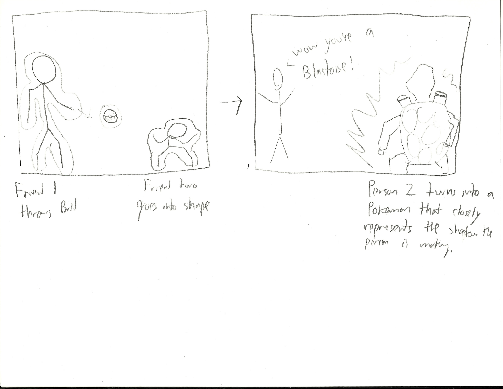User: Adults with a credit card who want to purchase clothes online
Context of Use: Bob wants to buy a shirt from a new online retailer, but is not quite sure what size he is; sometimes he wears a size medium, sometimes he wears a size large or even XL. Bob isn't sure if the online measurements the website provides are accurate and even more so, how accurately he is able to measure himself with a measuring tape. Bob needs to accurately decide his shirt size to make his purchase and not have to worry about returning or exchanging.
Design Decision Rationale: Because this application can easily be run from someone's laptop, it is suitable to determine the user's shirt size in the home or office setting. However, this idea may not be suitable for a public engagement space. One concern is that each online retailer would have different images of their shirt sizes, which may make it difficult to manage. The application needs to run quickly and accurately to help the user make his or her purchase in a short amount of time. In deciding a t-shirt size, the application would need to consider not only the front surface area of the person, but also the person's width. Perhaps we would need the person to stand with his or her arms raised, once facing the camera, and once facing 90 degrees away from the camera. Other features: this application could be applied to guess pant size as well.
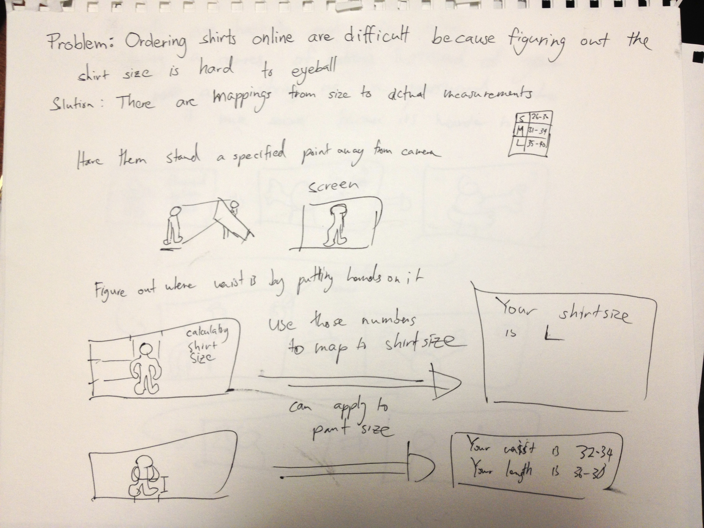User: Stay at home moms or people who want to try to stay in shape but may not have time to go to the gym or sign up for fitness classes
Context of Use: Homes, Yoga centers, Fitness centers. The application will guide the user to do the appropriate yoga positions for a certain amount of time. The user will try to stay in the yoga shape.
Design Decision Rationale: Because the application is targeted toward people who want to be healthier, the application would need to feel friendly and encouraging. The yoga shapes would need to be large to accommodate people of various sizes and additionally we would need to incorporate additional directions and tips on holding the position to enhance the learning experience of the user. This application may not be suitable for a public engagement space because people may feel self-conscious of learning yoga in public. To best help the users learn yoga, the interface would also gently critique the users' positions.
User Needs/Goals: User wants to be more fit by doing yoga, but doesn't have time to sign up for a yoga class or go to the gym, so he/she needs a virtual yoga teacher at home.
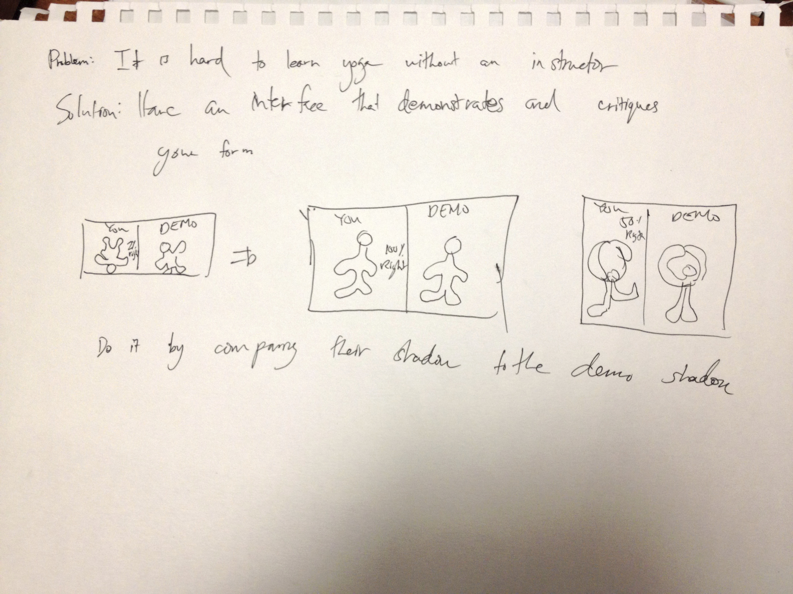User: Children interested in science, everyday people
Context of Use: Can be used in an elementary school classroom during the holiday season, in science classes when learning about how no two snowflakes are alike, in motivational speaking presentations to empower people to be themselves, holiday get-togethers, create a snowy background indoors
Design Decision Rationale: Because this concept and experience can be applicable in various different contexts, we wanted the experience to be as simple and magical as possible, tapping into multiple senses. The user only needs to stand in front of the computer and create a shape with his or her body, and then stand back and watch as his or her shadow is multiplied and transformed to create several different types of snowflakes. Soft holiday instrumental music then plays in the background as the user experiences a snowfall of snowflakes of him or herself.
User Needs/Goals: Experience an aesthetically pleasing snowfall while being warm indoors, understand that snowflakes are all created differently.
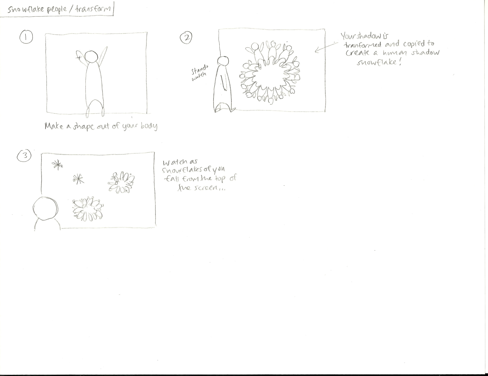User: To-be parents, camp counselors
Context of Use: As parents are preparing to learn how to baby-proof their apartment or as camp counselors are preparing their program for small children, this application could be a useful educational tool. It could serve as an ice-breaker type activity for camp counselors or be on an online module parents-to-be are looking at in preparing their home for a baby.
Design Decision Rationale: The items encompassed by this application would need to be broad in order to fit both the needs of parents-to-be and young camp counselors. Perhaps the silhouettes shown by the application could be tailored according to the age of the children. For example, for children ages 1-3, one object could be a coin (safe), and for children ages 5-7, an object could be a pair of child-safe scissors (safe). The user could select the age range the children in mind.
User Needs/Goals: The user needs to determine what items in his/her house or around the camp are child-friendly and which ones should be put out of sight.
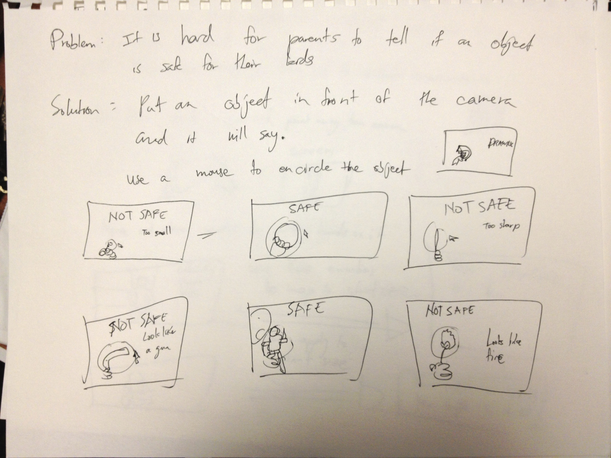User: College student who is too busy to go to a frat party, who wants the experience of going to a frat party, but maybe cannot leave his or her dorm room.
Context of Use: It is late on a Friday night and Adam wants to go to a frat party, but it's cold and snowy outside. He decides to be cool and have his own virtual frat party inside the comfort of his own room. Adam uses this application to dance with other shadows on the application. He even gets the experience of elbowing off creepers at the party if the shadows on the application get too close to him. An additional use case scenario could be a spontaneous dance party in White Plaza in the middle of the day.
Design Decision Rationale: Because it is trying to simulate a frat party, the application could let the user select the music at the party. We wanted to make this experience as open and real as possible. Multiple people can dance together in the application, as in a real frat party. The application will need to let the user feels comfortable enough to either dance alone or in daylight, utilizing perhaps a dark background and flashing lights.
User Needs/Goals: User wants to feel like he/she is at a party 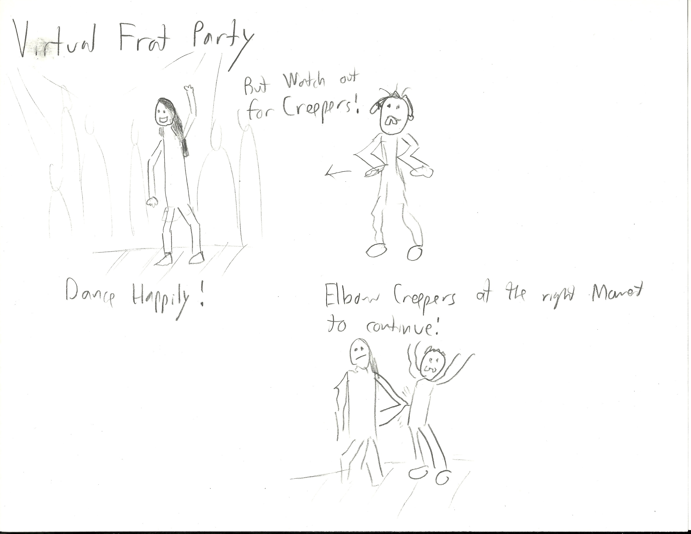
User: Young adolescents, high school and college students
Context of Use: Outdoor demonstration for alcohol education and to promote safe driving
Design Decision Rationale: The user will try to walk in a straight line in front of the camera, and after walking, the application will replay the user's walk so he/she can see what walk corresponds to what drunkness level.
User Needs/Goals: User needs a sense of how he/she could walk while being intoxicated. This experience will help inform youth of the dangers of drinking and driving and help to prevent accidents in the future.
User: Children, teachers, parents, environmental activists
Context of Use: To teach people to be more eco-friendly and care for the environment by picking up trash. This application could be used in as an exhibit in a rally or a museum to encourage environmental protection. It could also be used in conjunction to a film screening of the movie Wall-E and be used in discussions in the classroom.
Design Decision Rationale: The user will pretend to be a garbage truck. In order to simulate this experience, the user will need to pick up garbage (superimposed on the screen) at the right moment and then throw the garbage into the truck. Superimposing the images will allow the user to still be a garbage truck without requiring him/her to pick up actual physical trash. This is thus idea for a public engagement space like the classroom.
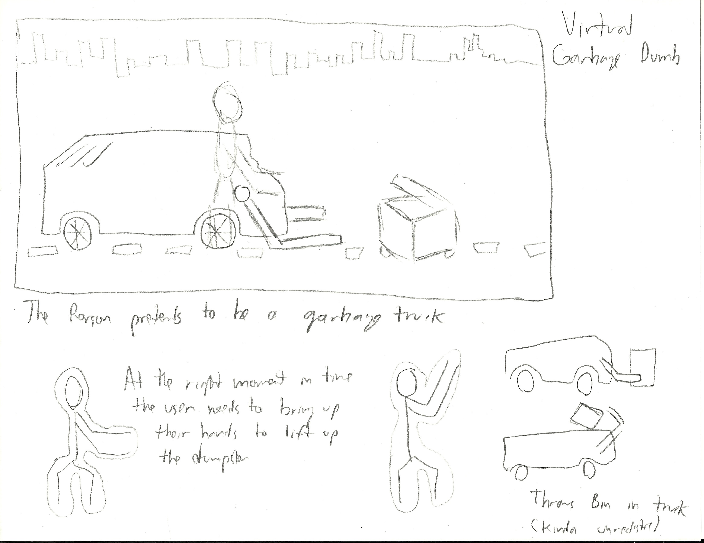User: Young adults, people with smartphones, children
Context of Use: To promote cybersecurity, as an activity in a library seminar
Problem: Passwords are hackable and easily stolen. It is hard to remember all your passwords for Facebook, your email, blog, Wordpress, etc. Our application allows you to create a series of actions instead of a string as a password, which makes your password more secure because it is harder to copy. Additionally, studies say that doing a gesture with a concept will in fact help you to remember a concept better, so this application could also serve as a memory device for passwords.
Design Decision Rationale: To ensure that users actually recall their passwords and do not simply stand doing random hand gestures to attempt to guess the password, there is a 10 second interval where users can do perform the gestures to their password. At the end of this time period, the password is either accepted or rejected. One design concern here is that though the application was originally intended to make passwords less likely to be stolen, passwords could still easily be stolen if this application were to be used in a public setting, for example, at Starbucks. In that case, other people may not know you are giving your password to a website, but should they be aware of your actions, they could easily steal your password by capturing your gestures on film.
User Needs/Goals: The user seeks a secure way to give his or her password to a website. 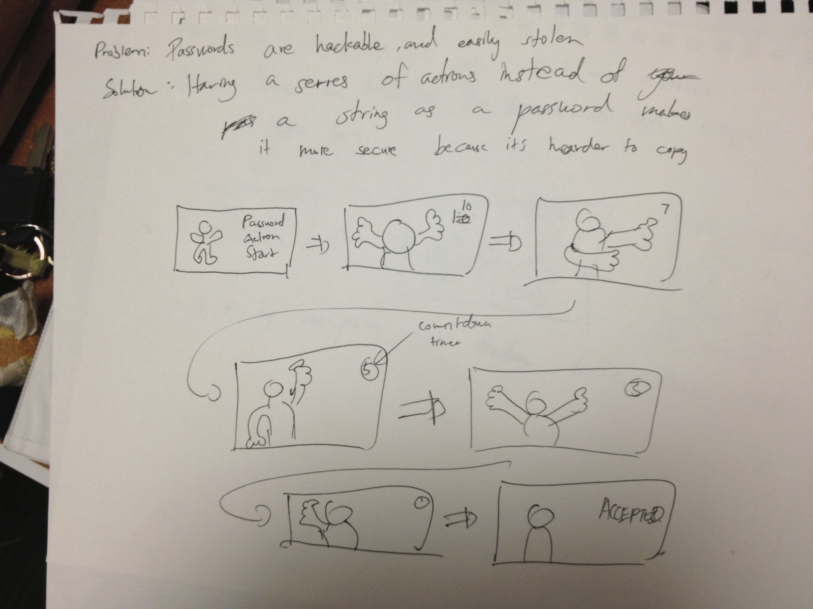
User: Youth and Adolescents, young adults people into playing games like Mario, etc.
Context of Use: Outdoor quad such as White Plaza, at gaming conventions, could be used in arcades, fitness centers (as a light exercise/break)
Design Decision Rationale: The game could simulate other obstacle video games like Mario. To that end, the game would be side scrolling where your shadow has to jump over obstacles.
User Needs/Goals: The user needs to get through the entire side scrolling game without running into any obstacles.

User: People who enjoy playing games like Fruit Ninja
Context of Use: Families and friends enjoying downtime together, any public space works
Design Decision Rationale: Because this is for entertainment, the game should be eye-catching, with colorful visuals and sound to attract audiences in a public space.
User Needs/Goals: The user needs to avoid certain objects falling from the top of the screen and catch other objects in order to score points.
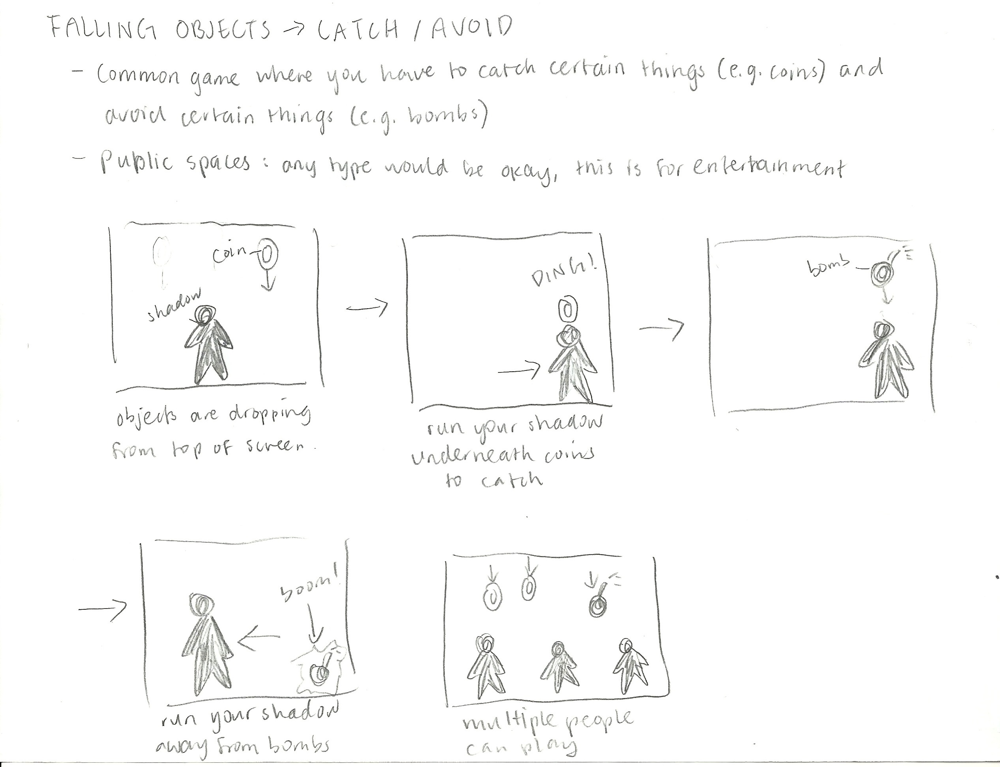User:Young adults who want to learn how to cook
Context of Use: Public spaces like schools (teach kids how to cook), cooking schools, restaurants, shopping center food courts
Design Decision Rationale: As this is an educational game/tutorial that teaches you how to cook in very basic steps, the font and language used in the application should be easy to read and comprehend. Visuals of tools in the user's hands that are superimposed at each step will help the user understand how to cook.
User Needs/Goals: The user wants an easy and active way to learn how to cook. Ideally the user could be able to do this with friends.

User: People practicing archery
Context of Use: Physical Education class, outdoor blacktop
Design Decision Rationale: The application would superimpose images of a bow and arrow onto the user's body after the user assumes the archer stance. The application could allow the user to choose whether he or she wants to do target practice or just shoot arrows. The target practice use case could make for a good rainy day indoor activity for students in Physical Education classes. It is also a good exercise in hand eye coordination. Additionally, the application could help users develop good form for archery. Users could stand in a template shape and the application would critique users' form as they shot the arrow.
User Needs/Goals: The user wants practice in aiming arrows and perfecting the archer stance.
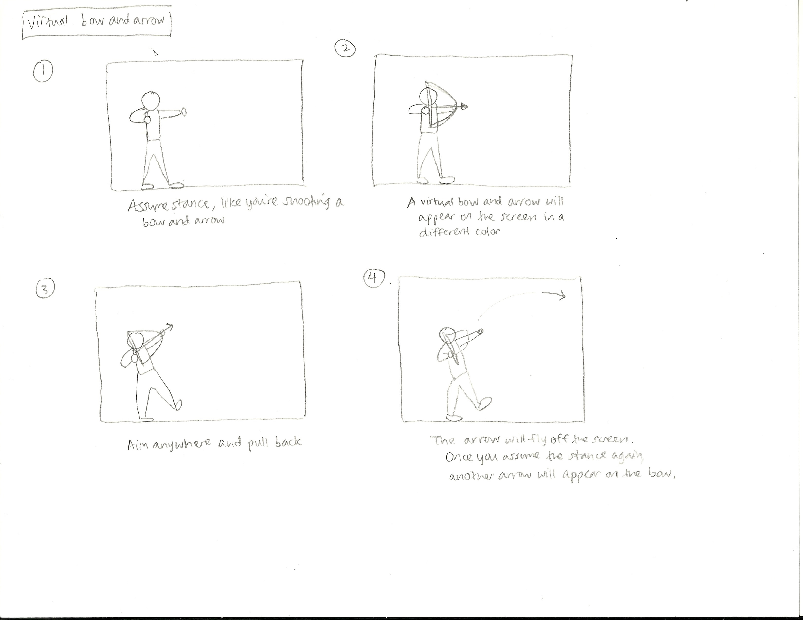User: Young adults, children, people who may be likely to get scoliosis
Context of Use: Outdoor event promoting good posture, possibly put on by a chiropractor. Additionally, workplaces where people may have developed bad posture, schools, department stores
Design Decision Rationale: The application would look at the user's shadow from the front and side to correct his or her posture. The user's side profile will be particularly telling since it may be difficult from the front shadow view to assess slouching and the position of the belly. Additionally, small tips on how to have better posture along with the corrected shadow image will help users to remember the experience and take concrete steps to protect their health in the future.
User Needs/Goals: Improve his or her posture
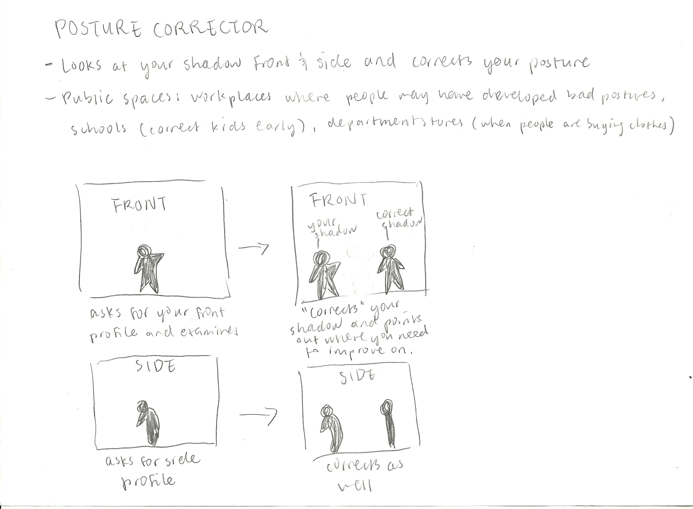Detailed Design of Three Ideas
User: children, youth and adolescents, college students, young adults, anyone who knows the game Tetris
Setting: White Plaza demonstration, Tresidder, Old Union, any study space.
Scenario: A group of students are working together in a large open space on campus. They have been sitting for a very long time and need a study break, as their brains are fried from thinking and sitting for long periods of time. To stimulate themselves, ordinarily they would go on Facebook, Youtube, or OMGPOP to connect with their friends or pull out their phones to text their friends or play some games.
Problem: However, in this way, students are taking a break by being "alone" together. These breaks are not active either and do not allow students to get their blood flowing after long periods of sitting.
User Needs/Goals: User needs to actively interact with their bodies and the people around them during a study break.
Design Decision Rationale: Inspired by the Japanese Human Tetris videos on Youtube, the game should feel friendly and fun. The use of bright and fun colors, as well as various game sound effects, will engage the users. Although the Japanese Human Tetris game involved some shapes people jump through, for our application we decided not to have this feature because there would be a lag in capturing the jump and additional time needed to process the capture of the shadow. In order to simulate human Tetris, a variety of shapes slowly come toward the user and the user needs to stay within the boundaries of the shape in order to clear the level. To engage many people in a public space, some shapes require multiple people to join forces and create shapes. As the game engages the whole body, Human Tetris promotes active participation among all its users and is a delightful experience for users of all ages in public spaces.
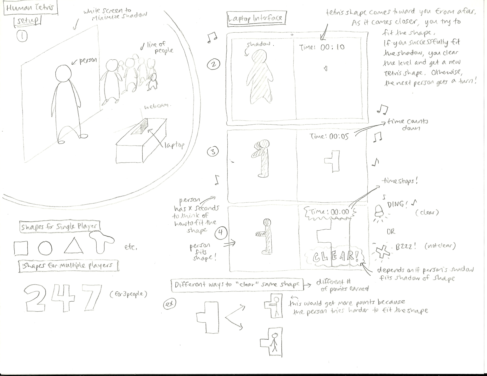 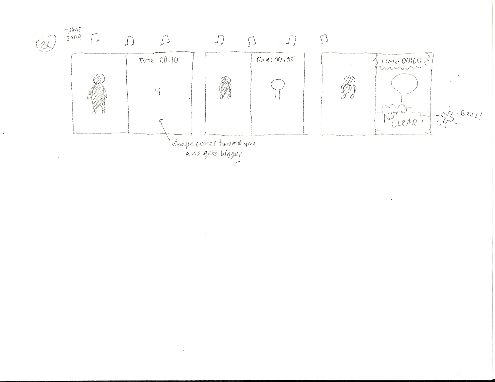User: Children interested in piano but maybe can't stay still enough to sit down and practice for long periods of time, youth who enjoy music
Context of Use: Elementary school music classrooms, lunchtime activity events
Design Decision Rationale: To enable the users to more easily reach the piano keys, the piano keyboard is curved around the user. This way the user only needs to reach out in a spiral fashion to hit the keys. One curved end of the keys will be low tones, and the other end will be high tones, so that Middle C will be just above the user's head.
User Needs/Goals: The user likes playing the piano, but wants to also engage his or her whole body when playing the piano.
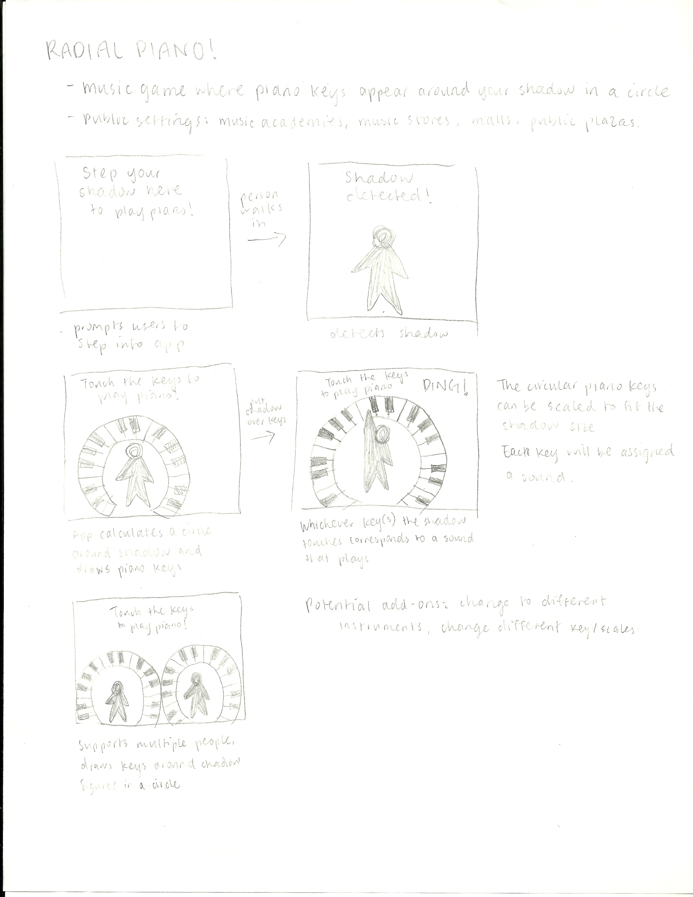User: Young children interested in space
Context of Use: Science museum like Exploratorium, Tech Museum, Cal Academy of Sciences
Design Decision Rationale: The application lets the user jump and then replays and displays his or her jump in the form of an astronaut after he or she has already landed. The user and the application are displayed in parallel to allow the user to compare between a regular jump on Earth and on the moon. In order to make the experience as real as possible for the children, the astronaut's spacesuit could be the same color as the user's shirt. The user could also choose if he/she is a boy or a girl. Other features of the application include the addition of either a bulky or a slim space suit, which would be taken into consideration when calculating the height of the jump. Users could also select which planet they want to be on to see how gravity on each planet differs.
User Needs/Goals: User wants to know how far he will be able to jump on the moon.
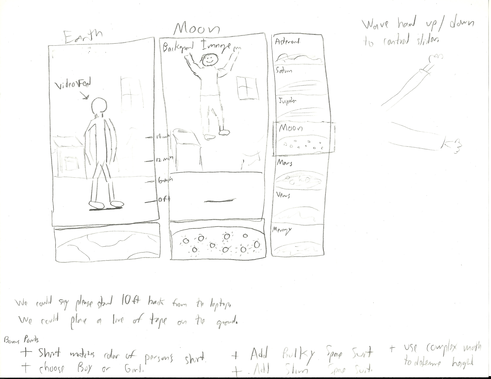 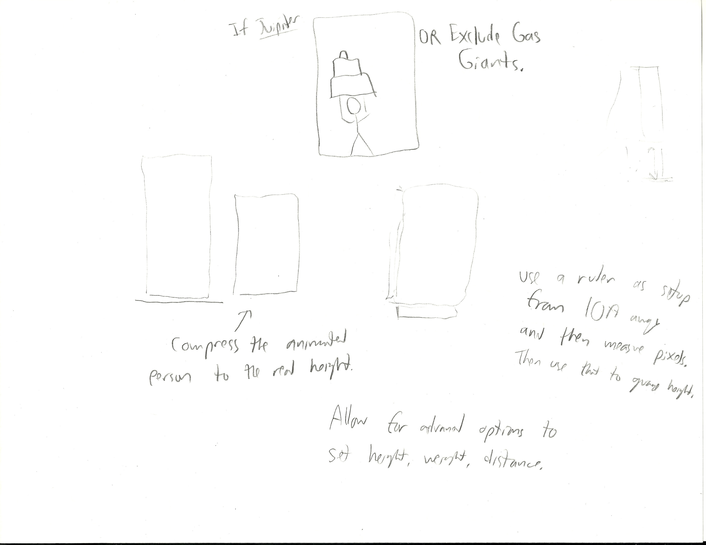